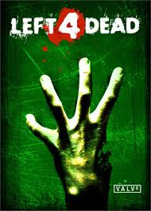

Left4Dead:
From Valve (the creators of Counter-Strike, Half-Life and more) comes Left 4 Dead, a co-op action horror game for the PC and Xbox 360 that casts up to four players in an epic struggle for survival against swarming zombie hordes and terrifying mutant monsters.
Set in the immediate aftermath of the zombie apocalypse, L4D's survival co-op mode lets you blast a path through the infected in four unique “movies,” guiding your survivors across the rooftops of an abandoned metropolis, through rural ghost towns and pitch-black forests in your quest to escape a devastated Ground Zero crawling with infected enemies. Each "movie" is comprised of five large maps, and can be played by one to four human players, with an emphasis on team-based strategy and objectives.
New technology dubbed "the AI Director" is used to generate a unique gameplay experience every time you play. The Director tailors the frequency and ferocity of the zombie attacks to your performance, putting you in the middle of a fast-paced, but not overwhelming, Hollywood horror movie.
Addictive single player, co-op, and multiplayer action gameplay from the makers of Counter-Strike and Half-Life.
Versus Mode lets you compete four-on-four with friends, playing as a human trying to get rescued, or as a zombie boss monster that will stop at nothing to destroy them.
See how long you and your friends can hold out against the infected horde in the new Survival Mode.
An advanced AI director dynamically creates intense and unique experiences every time the game is played.
20 maps, 10 weapons and unlimited possibilities in four sprawling "movies".
Matchmaking, stats, rankings, and awards system drive collaborative play.
Designer's Commentary allows gamers to go "behind the scenes" of the game.
Powered by Source and Steam.
Buy Left4Dead now for only $20!
Continue to Store>>>
MINIMUM:
Supported OS: Windows® 7 32/64-bit / Vista 32/64 / XP
Processor: Pentium 4 3.0GHz
Memory: 1 GB
Graphics: 128 MB, Shader model 2.0, ATI 9600, NVidia 6600 or better
Hard Drive: At least 7.5 GB of free space
Sound Card: DirectX 9.0c compatible sound card
RECOMMENDED:
Supported OS: Windows® 7 32/64-bit / Vista 32/64 / XP
Processor: Intel core 2 duo 2.4GHz
Memory: 1 GB
Graphics: Shader model 3.0, NVidia 7600, ATI X1600 or better